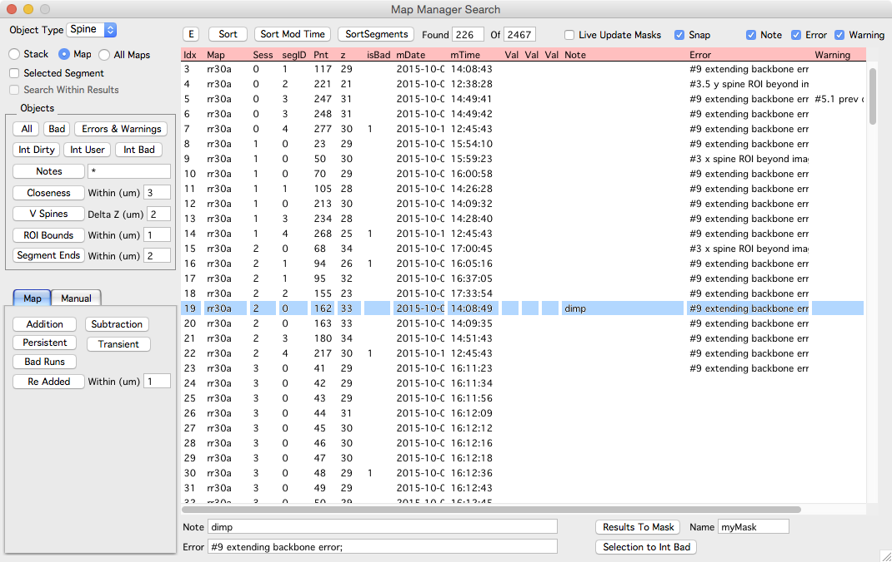

Search panel

The search panel allows a stack or map to be searched for stack db objects.
Interacting with results
Performing a search will create a list of object matching the search criteria. Selecting an entry in the search results will select that object in any open stack and map plots. Likewise, selecting an object in a stack or map plot will select the object in the search list (if it is in the list).
- Single-click or scroll with keyboard will select the object in existing stack windows (it will not open or pan/zoom the existing stack windows).
- Double-click to open and select the object in its corresponding stack.
- Option-click to zoom the object in an already open stack plot.
- Right-click to open a run plot.
Types of searches
First select the type of object with 'Object Type' popup. Start by selecting 'Spine'.
Objects
- All. All objects of 'Object Type'
- Bad. Objects marked bad
- Errors and Warning. Objects with Intensity Analysis' errors and warnings.
- Notes.
- Closeness. Returns object that are within specified distance (um) of each other.
- V Spines. Return spines where the z-plane of the spine head is farther (in z) from the connected backbone/dendrite line.
- Int Dirty. Returns spines with dirty intensity analysis. Spines with dirty intensity analysis can be analyzed in the main map manager panel, intensity tab.
- Int User.
- Int Bad.
- ROI Bounds. Return spines with background ROI within specified distance (um) from edges of image. This is useful if stack alignment has been run causing images to be shifted/rotated resulting in undefined regions on the edge of the image.
Map
- Addition.
- Subtraction.
- Persistent
- Transient
- Bad Runs. Return a list of objects that have a mixture of good and bad within their respective run. This is used for debugging and will be removed.
- Re Added. Return a list of added spines that have a previous subtraction (on a previous timepoint) that is within specified distance along the backbone/dendrite.
Manual Search
Return a list of objects matching a user specified criterion.
Do this by selecting a statistic in the list, specify a value, and an operator (>, >=, <, <=, =, Not).
For example, to generate a search of all long spines, select sLen2d/IntCh1, enter a spine length like 4 um, select '>' operator and press 'Manual Search' button.